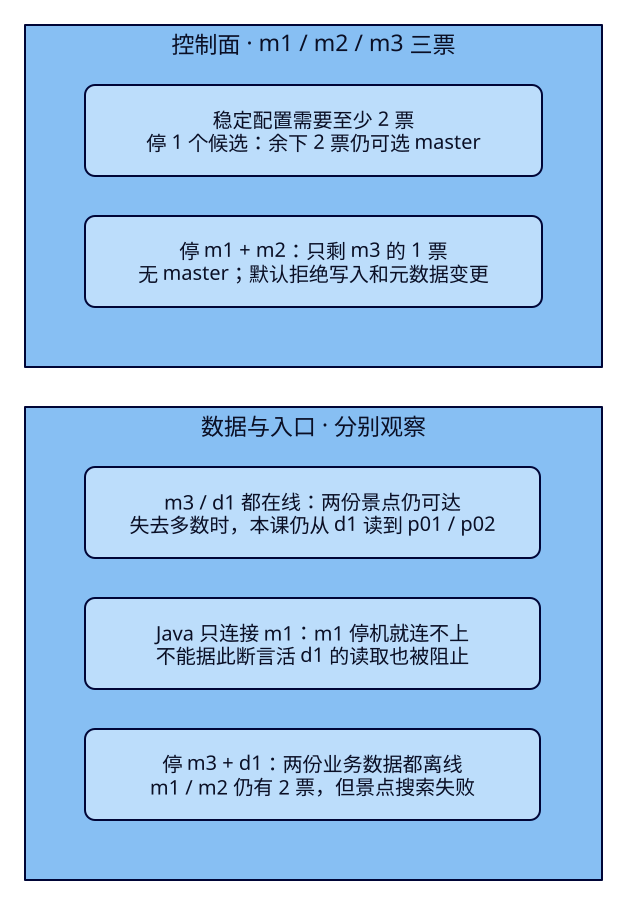
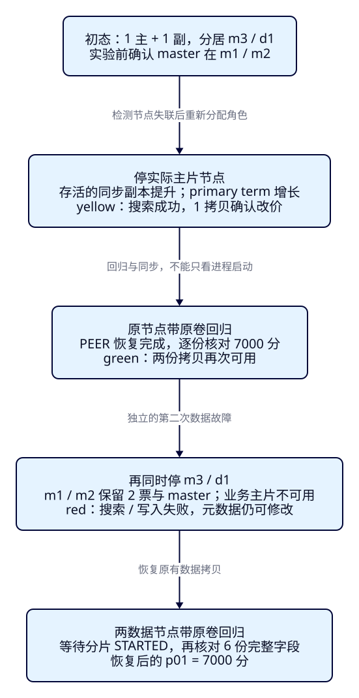

节点停了，
搜索和改价还行吗？
游客正在搜索杭州西湖，运营准备把景点p01的票价从60元改为65元。一台ES节点突然停机，搜索页面仍有结果，却不能保存新价格；另一次已经选出了master，搜索仍报错。F29讲清了一份资料落在哪个分片，本课进一步问：入口、集群决策和业务数据分别还剩什么？学完要能用真实状态、错误和恢复后的价格回答，而不是只看一个绿色徽章。
学完能用输出证明什么
- 数实际投票配置，比较master与选举term，解释三票中剩两票、剩一票的区别。
- 停实际主分片节点，核对副本提升、primary term、单拷贝改价和原节点回归；再验证全部数据拷贝不可用的反例。
- 把REST状态与Java观察窗的成功、503与原始ES错误对应起来，恢复后逐份核对6个ID及完整字段。
本课目录
图解跳转：01 · 两套可用条件 · 02 · 分片故障与回归
1. 页面能打开，不等于搜索链路可用
旅游业务数据库仍保存业务事实，ES提供搜索投影。本课只验证固定景点资料在节点故障下能否读写，不模拟订单、库存扣减或数据库容灾。读者打开的教程是静态Pages；真正搜索仍经过“本机浏览器 → Java服务 → ES”。页面静态资源能加载，只能证明Java进程或教程服务还在。
沿着一次搜索，先问请求能否到达活入口，再问集群能否作出需要的决策，最后问目标分片有没有可用数据。入口可以转发请求，不要求它持有景点分片；但如果应用只配置了一个入口，这个入口停机就可能连接失败，即使别的节点能提供完整结果。反过来，入口和master都活着，也无法凭空返回已经离线的两份景点拷贝。
ES的master负责集群状态，例如哪些节点加入、索引元数据及分片路由。某个分片组的primary负责该组写入，replica保存同组数据并可参与读取。一个节点可以同时具有master资格和data角色，所以“主节点停了”必须先说清是哪一种主，以及它还承担什么角色。本课特意选定停机集合，让这两类因果能分开观察。
2. 多数是投票配置的多数
本课稳定投票配置包含m1、m2、m3的三个node ID。一次需要多数同意的决策至少要两票，因为2×2>3；d1没有master资格，不增加票数。三个候选中停一个，余下两个仍可能选出master并提交状态；停两个只剩一票，不能因为“还活着一个master候选”就让它单独决定集群状态。
真正应数的是last_committed_config与last_accepted_config中的ID，不能拿当前进程总数代替投票人数。成员变化时两套配置可能不同，选举还涉及新旧配置的多数以及状态新旧等条件。本课在稳定点核对两套集合相同、大小为3，再做故障；列表顺序没有投票意义。用这个限定样本学多数，不把“三节点永远任意停两个”当规则。
当选举完成，master的node ID可能改变，cluster_coordination.term表示选举任期。分片提升使用另一个量primary_terms[0]，对应本课0号主分片的任期。前者增长不要求后者增长。节点退出检测、选举、状态发布、分片启动都需要时间；实验按状态等待，不把一次测到的耗时写成可用性承诺。

默认策略与固定版本依据
官方投票配置说明解释为何按配置数多数；本课进一步核对v9.4.0 VotingConfiguration.hasQuorum与ElectionStrategy.isElectionQuorum。NoMasterBlockService定义默认write策略及503阻塞；RoutingNodes.unassignPrimaryAndPromoteActiveReplicaIfExists与promoteActiveReplicaShardToPrimary对应可提升副本与无副本两条路径。固定tag字节核对与实际响应分列，源码不代替本课实测。
3. 用四个进程分开停投票与停数据
| 服务 / HTTP | 角色 | 在本课承担什么 |
|---|---|---|
| m1 / 19430 | master | 候选、协调入口；Java单入口指向这里 |
| m2 / 19431 | master | 另一个不存景点的候选 |
| m3 / 19432 | master、data、ingest | 第三票，也承载一份景点拷贝 |
| d1 / 19433 | data | 第二份景点拷贝；不投票 |
因此停m1+m2时，两份数据还在，但仅剩m3的一票；停m3+d1时，两份数据都离线，m1+m2仍有两票。这是实验拓扑，不是生产部署建议。四进程同在一台Docker VM，不证明跨机器或跨可用区容灾。所有HTTP只绑127.0.0.1，transport只在本课网络内；本课无认证，不把凭据放进浏览器。
使用独立es-framework-f30网络、四份同名前缀持久卷；m1/m2各128MiB堆、512MiB容器上限，m3/d1各192MiB堆、640MiB上限。小堆仅用于6份固定资料。作者曾试五进程并遭遇OOM，正式验收改用本配置；启动前应检查Docker及其他服务的可用内存，不能把这些数值当通用最低配置。ES9.4.0/Lucene10.4.0，应用与ES内置JVM分别记录。
从仓库根目录进入项目，先启动独立环境。首次仅在四份卷全部不存在时叠加bootstrap，形成后移除实际运行中的引导名单并核对原UUID与node ID；完整旧卷使用稳定配置，部分缺失则拒绝自动引导：
cd projects/travel-search
python3 labs/f30/lab.py start --out /tmp/f30-reader-setup完整稳定配置与首次引导文件
name: es-framework-f30
x-common: &common
image: docker.elastic.co/elasticsearch/elasticsearch:9.4.0
labels: {esweb.lesson: f30}
environment: &environment
cluster.name: travel-f30-lab
network.host: 0.0.0.0
transport.port: 9300
discovery.seed_hosts: m1:9300,m2:9300,m3:9300
xpack.security.enabled: "false"
xpack.ml.enabled: "false"
ulimits:
nofile: {soft: 65535, hard: 65535}
services:
m1:
<<: *common
environment:
<<: *environment
node.name: travel-f30-m1
node.roles: master
ES_JAVA_OPTS: -Xms128m -Xmx128m
mem_limit: 512m
ports: ["127.0.0.1:19430:9200"]
volumes: ["m1-data:/usr/share/elasticsearch/data"]
m2:
<<: *common
environment:
<<: *environment
node.name: travel-f30-m2
node.roles: master
ES_JAVA_OPTS: -Xms128m -Xmx128m
mem_limit: 512m
ports: ["127.0.0.1:19431:9200"]
volumes: ["m2-data:/usr/share/elasticsearch/data"]
m3:
<<: *common
environment:
<<: *environment
node.name: travel-f30-m3
node.roles: master,data,ingest
ES_JAVA_OPTS: -Xms192m -Xmx192m
mem_limit: 640m
ports: ["127.0.0.1:19432:9200"]
volumes: ["m3-data:/usr/share/elasticsearch/data"]
d1:
<<: *common
environment:
<<: *environment
node.name: travel-f30-d1
node.roles: data
ES_JAVA_OPTS: -Xms192m -Xmx192m
mem_limit: 640m
ports: ["127.0.0.1:19433:9200"]
volumes: ["d1-data:/usr/share/elasticsearch/data"]
volumes:
m1-data:
name: es-framework-f30-m1-data
labels: {esweb.lesson: f30}
m2-data:
name: es-framework-f30-m2-data
labels: {esweb.lesson: f30}
m3-data:
name: es-framework-f30-m3-data
labels: {esweb.lesson: f30}
d1-data:
name: es-framework-f30-d1-data
labels: {esweb.lesson: f30}# First formation only, with FOUR new lesson-owned volumes.
services:
m1:
environment:
cluster.initial_master_nodes: travel-f30-m1,travel-f30-m2,travel-f30-m3
m2:
environment:
cluster.initial_master_nodes: travel-f30-m1,travel-f30-m2,travel-f30-m3
m3:
environment:
cluster.initial_master_nodes: travel-f30-m1,travel-f30-m2,travel-f30-m3另一终端配置完整JDK25的JAVA_HOME/PATH，然后构建并启动原F07服务。ES_URL仍指单个m1；本课不修改共享查询、Controller或前端。Boot4.0.8与Java/Rest5 Client9.4.8沿用锁定依赖：
cd projects/travel-search/backend
./mvnw -B -ntp clean package
ES_URL=http://127.0.0.1:19430 ES_INDEX=tut-f30-attractions APP_PORT=18081 \
java -jar target/travel-search-0.7.0.jar回到第一个终端，执行配套脚本完整走一轮。它先点名删除tut-f30-attractions与tut-f30-metadata，再重建；不会清理其他课。所有收据目录须是新目录。启动、准备、等待、清理与教学请求分别标记，脚本负责断言，正文负责解释观察：
export APP_URL=http://127.0.0.1:18081
python3 labs/f30/lab.py run --out /tmp/f30-reader-round1固定资料沿用六个景点的字段契约：p01/p02是杭州、在售、200元预算内且3km范围内的西湖；p03超预算，p04属于福州，p05已关闭，p06不含西湖词项。名称使用带空格的合成语料与whitespace，价格为CNY整数分。索引显式1主1副、strict、refresh=-1；写完显式refresh，避免用自动刷新时机解释故障。
完整6份固定资料与建索引请求
{"create":{"_id":"p01"}}
{"attraction_id":"p01","name":"西湖 湖畔","city_code":"HZ","ticket_price_fen":6000,"currency":"CNY","status":"open","location":{"lat":30.25,"lon":120.15}}
{"create":{"_id":"p02"}}
{"attraction_id":"p02","name":"西湖 公园","city_code":"HZ","ticket_price_fen":0,"currency":"CNY","status":"open","location":{"lat":30.251,"lon":120.15}}
{"create":{"_id":"p03"}}
{"attraction_id":"p03","name":"西湖 山居","city_code":"HZ","ticket_price_fen":30000,"currency":"CNY","status":"open","location":{"lat":30.252,"lon":120.15}}
{"create":{"_id":"p04"}}
{"attraction_id":"p04","name":"西湖 古街","city_code":"FZ","ticket_price_fen":1000,"currency":"CNY","status":"open","location":{"lat":30.251,"lon":120.15}}
{"create":{"_id":"p05"}}
{"attraction_id":"p05","name":"西湖 故居","city_code":"HZ","ticket_price_fen":5000,"currency":"CNY","status":"closed","location":{"lat":30.253,"lon":120.15}}
{"create":{"_id":"p06"}}
{"attraction_id":"p06","name":"运河 西溪","city_code":"HZ","ticket_price_fen":1000,"currency":"CNY","status":"open","location":{"lat":30.25,"lon":120.15}}{
"settings": {
"number_of_shards": 1,
"number_of_replicas": 1,
"refresh_interval": "-1"
},
"mappings": {
"dynamic": "strict",
"properties": {
"attraction_id": {
"type": "keyword"
},
"name": {
"type": "text",
"analyzer": "whitespace"
},
"city_code": {
"type": "keyword"
},
"ticket_price_fen": {
"type": "integer",
"coerce": false
},
"currency": {
"type": "keyword"
},
"status": {
"type": "keyword"
},
"location": {
"type": "geo_point"
}
}
}
}初态应逐条Bulk成功、每条两拷贝确认，refresh后6个逻辑ID；_cat/shards的两行分别p/r，所在节点为m3与d1。只看两行docs相加会得到12份物理副本中的文档计数，不能说有12个景点。以下请求是手工观察入口；与脚本二选一创建数据，不要重复Bulk create导致条级409：
GET /_nodes?filter_path=nodes.*.name,nodes.*.roles
GET /_cluster/state/master_node,nodes,metadata?filter_path=master_node,nodes.*.name,metadata.cluster_coordination
GET /_cat/shards/tut-f30-attractions?format=json&h=index,shard,prirep,state,docs,node
POST /tut-f30-attractions/_refresh为单独研究选举，脚本先保证当前master在m1或m2。如果恰为混合节点m3，它会在准备阶段停m3、等专用候选当选，再带原卷启动m3并等待恢复。数据故障案例前也做这项检查。准备操作有独立收据，不把它藏成“master从来不会与data重合”的假设。
4. f30-c01：停当前专用master，景点主片不跟着换
先记录master对应的实际服务名、三个投票ID、选举term和0号分片primary term。然后只对当前专用master执行SIGKILL，不能凭端口顺序猜m1一定当选。请求改从另一个活入口发出；脚本按真实node ID选择服务，并在Docker操作前核对本课容器标签。
docker compose -f infra/f30/compose.yaml kill -s SIGKILL "$F30_FAILED_MASTER"等到3个节点、业务索引green且新master明确后，对比两张状态：当选ID变了，选举term增长；景点主副仍落在原来的两个data节点，primary term没有因此变化。这说明选master与选某个分片的主拷贝是两件事。过渡期间的请求可能失败，实验的成功结论限定在已达到等待条件之后。
通过活入口搜索仍是p01/p02；把p01完整替换为6500分，显式wait_for_active_shards=all，确认_shards.successful=2，再refresh。另建并删除本课临时索引，证明元数据操作也恢复。完整替换不能省掉其他必需字段：
PUT /tut-f30-attractions/_doc/p01?wait_for_active_shards=all&timeout=2s
{"attraction_id":"p01","name":"西湖 湖畔","city_code":"HZ","ticket_price_fen":6500,"currency":"CNY","status":"open","location":{"lat":30.25,"lon":120.15}}
POST /tut-f30-attractions/_refresh
PUT /tut-f30-metadata?master_timeout=2s
{"settings":{"number_of_shards":1,"number_of_replicas":0}}
DELETE /tut-f30-metadata最后start刚才停的那个服务，使用原卷与稳定配置；等四节点、两拷贝STARTED，再核对UUID、全部字段与Java的65元结果。原master回归不要求抢回master身份，原node ID不变也不等于它必须继续承担原来的当选角色。
5. f30-c02：两份数据还在，却没有足够票
现在从完整健康环境出发，同时停m1与m2，保留m3和d1。先预测：数据能不能读？6500能不能改成9900？能不能创建新索引？三个问题要分别发请求。故障前核对实际默认cluster.no_master_block=write，且persistent/transient没有覆盖，不修改策略来制造结果。
docker compose -f infra/f30/compose.yaml kill -s SIGKILL m1 m2GET /_cluster/settings?include_defaults=true&flat_settings=true
GET /_cluster/state/master_node,metadata,blocks?local=true&filter_path=master_node,metadata.cluster_coordination,blocks实际等待到活节点本地视图没有master_node，global block中出现编号2的no master。此时投票集合仍含原三个ID，仅m3存活这一事实不会把三票自动变成一票。local=true读的是该节点当前所知状态，不是对全网即时一致视图的保证；脚本同时核对m3与d1。
默认write策略拒绝写入，却允许基于最后已知状态读取。本课两份拷贝仍互通且已刷新，从d1执行完整搜索能读到p01/p02和6500分；这只证明这个固定故障下的读取。网络分区、旧路由、离线分片或不同no_master_block策略都可能改变结果，不能说“没有master永远不影响搜索”。
把上一节完整p01的价格改为9900，通过活d1执行PUT /tut-f30-attractions/_doc/p01?timeout=2s；再PUT /tut-f30-metadata?master_timeout=2s&timeout=2s。实际均503，写入报cluster_block_exception（SERVICE_UNAVAILABLE/2/no master），建索引报master_not_discovered_exception。timeout与master_timeout是这两个请求的等待参数，不是故障检测或选举超时配置。
Java只连19430的m1，本次m1也停了，所以观察窗返回连接不可用503并清空卡片；这不能用来反驳“活d1还能读”。恢复m1/m2后等待完整拓扑，确认p01仍是6500分、总数6、临时索引404，再刷新观察窗回到65元。超时请求在一般系统中可能有未知结果，本课对拒绝后的字段和临时索引专门复查，不靠一个503猜测状态。
docker compose -f infra/f30/compose.yaml start m1 m2
# 用原卷回归；不要重新加cluster.initial_master_nodes6. f30-c03：停实际主片，剩下的一份能接班吗？
重新确认当前master在专用m1/m2，三个投票节点及两份数据都健康。读取真实分片路由，找出primary=true所在的m3或d1，再停它。停m3会同时少一票，但另外两票仍在；停d1则不改变票数。两种情况下本课当前专用master都保持在线，因此可以把注意力放在数据主片上。
等待三节点、业务索引yellow且活动主片明确。实际原同步副本所在node ID变成primary，0号primary term增长，master ID保持不变。yellow在这里表示主片可用、期望副本缺失。它不是“搜不到资料”的同义词，也不是已经恢复了冗余。
GET /_cluster/state/master_node,nodes,metadata,routing_table/tut-f30-attractions?filter_path=master_node,nodes.*.name,metadata.indices.*.primary_terms,metadata.indices.*.in_sync_allocations,routing_table
GET /_cluster/health/tut-f30-attractions
GET /_cat/shards/tut-f30-attractions?format=json&h=shard,prirep,state,docs,node搜索仍返回两份合格景点；本次把p01改为7000分。wait_for_active_shards=1允许只有主片可用时进入写入，实际成功拷贝数为1。随后用相同完整文档尝试写9900分，但改成wait_for_active_shards=all&timeout=2s：当前只有1份而配置需要2份，返回503 unavailable_shards_exception。等全部拷贝的门槛与复制完成的成功数是两个观察点；all也不是任何未来故障都不丢数据的承诺。
PUT /tut-f30-attractions/_doc/p01?wait_for_active_shards=1&timeout=2s
{"attraction_id":"p01","name":"西湖 湖畔","city_code":"HZ","ticket_price_fen":7000,"currency":"CNY","status":"open","location":{"lat":30.25,"lon":120.15}}
PUT /tut-f30-attractions/_doc/p01?wait_for_active_shards=all&timeout=2s
{"attraction_id":"p01","name":"西湖 湖畔","city_code":"HZ","ticket_price_fen":9900,"currency":"CNY","status":"open","location":{"lat":30.25,"lon":120.15}}
POST /tut-f30-attractions/_refresh两次写入后再查字段，价格是7000而非9900。让停机节点带原卷回归，等待两行STARTED；_recovery实际显示回归目标的PEER恢复已DONE。回归节点的旧磁盘可能缺少停机期间那次改价，需要同步到当前主片。只看到容器Up或健康变green还不足够，因此脚本分别用_only_nodes限定两份拷贝读取，逐份比对6个ID与所有_source字段。
GET /tut-f30-attractions/_recovery?detailed=true
POST /tut-f30-attractions/_search?preference=_only_nodes:实际node_ID&allow_partial_search_results=false
{"size":20,"track_total_hits":true,"query":{"match_all":{}},"sort":[{"attraction_id":"asc"}]}
7. master还在，全部景点拷贝却离线
等上一小节的两个拷贝都已经有7000分，再同时停m3+d1。m1+m2仍是三票中的多数，原专用master继续工作；但本课唯一分片组的两份拷贝都不在。等待两节点、索引red，查看主副路由都为UNASSIGNED，然后通过仍活着的m1请求业务数据。
docker compose -f infra/f30/compose.yaml kill -s SIGKILL m3 d1完整搜索显式allow_partial_search_results=false，实际503 search_phase_execution_exception；写入7000或9900也无法找到活动主片，实际503 unavailable_shards_exception。这里没有“返回0个景点”的成功结果。Java能连上m1却收到ES拒绝。锁定的Rest5 Client9.4.8把这次ES503作为ResponseException抛出，它属于IOException；既有异常分支也返回503 SEARCH_UNAVAILABLE。两种原因落到同一通用错误码，必须用活入口的原始响应区分，不能只凭页面503诊断。
做一个反例：此时仍能创建临时索引的元数据。本课特意设wait_for_active_shards=0，跳过等待分片启动；响应acknowledged为true之后，_cat/shards仍显示新主片UNASSIGNED。因此即使shards_acknowledged也为true，仍须结合“等0份”的请求条件理解，不能把它当成已有数据节点。这份空临时索引立即点名删除。
PUT /tut-f30-metadata?wait_for_active_shards=0&master_timeout=2s&timeout=2s
{"settings":{"number_of_shards":1,"number_of_replicas":0}}
GET /_cat/shards/tut-f30-metadata?format=json&h=index,shard,prirep,state,node
DELETE /tut-f30-metadata最后start m3 d1，仍使用原四份持久卷。等四节点、业务索引green、无初始化与迁移，再核对原UUID、四个node ID、mapping、6份资料和两拷贝价格。实际p01恢复为7000分，p02为0分，其他字段保持固定样本；观察窗重新显示70元和0元。这个结果证明原卷可用时的节点回归，不覆盖磁盘丢失、快照恢复、跨机器分区或同时写入的随机故障。
docker compose -f infra/f30/compose.yaml start m3 d1
# 在数据恢复并核对完成后，才继续下一轮8. 同一搜索契约，对照真实页面变化
输入固定为西湖、HZ、200元、中心30.25/120.15、半径3km；ES价格条件实际使用20000分。查询按attraction_id排序，避免把故障时的相关性浮点值当本课目标。以下REST正文和原Java request方法一致；运维判断使用配置与REST，不为停机新写一个Controller。
{
"size": 20,
"track_total_hits": true,
"track_scores": true,
"_source": {
"includes": [
"attraction_id",
"name",
"city_code",
"ticket_price_fen",
"currency",
"status",
"location"
]
},
"query": {
"bool": {
"must": [
{
"match": {
"name": {
"query": "西湖",
"operator": "or"
}
}
}
],
"filter": [
{
"term": {
"city_code": {
"value": "HZ"
}
}
},
{
"term": {
"currency": {
"value": "CNY"
}
}
},
{
"range": {
"ticket_price_fen": {
"gte": 0.0,
"lte": 20000.0
}
}
},
{
"term": {
"status": {
"value": "open"
}
}
},
{
"geo_distance": {
"distance": "3.0km",
"distance_type": "arc",
"location": {
"lat": 30.25,
"lon": 120.15
}
}
}
]
}
},
"sort": [
{
"attraction_id": {
"order": "asc"
}
}
]
}Java的完整关键实现如下。客户端仍按本机ES_URL连接，索引来自ES_INDEX。查询未在请求上显式禁止部分搜索；既有响应分支会拒绝timed_out或failed shard，不把不完整结果作为正常卡片。本课只有一个逻辑分片，全部不可用时ES返回503，实际客户端抛出ResponseException；不据此声称测过多分片部分成功。
public SearchRequest request(SearchInput input) {
return SearchRequest.of(search -> search.index(index)
.size(20).trackTotalHits(t -> t.enabled(true)).trackScores(true)
.source(s -> s.filter(f -> f.includes(List.of("attraction_id", "name", "city_code",
"ticket_price_fen", "currency", "status", "location"))))
.query(q -> q.bool(b -> b
.must(m -> m.match(t -> t.field("name").query(input.q()).operator(Operator.Or)))
.filter(f -> f.term(t -> t.field("city_code").value(input.cityCode())))
.filter(f -> f.term(t -> t.field("currency").value("CNY")))
.filter(f -> f.range(r -> r.number(n -> n.field("ticket_price_fen")
.gte(0.0).lte(input.maxPriceFen().doubleValue()))))
.filter(f -> f.term(t -> t.field("status").value("open")))
.filter(f -> f.geoDistance(g -> g.field("location")
.distance(input.radiusKm() + "km").distanceType(GeoDistanceType.Arc)
.location(l -> l.latlon(p -> p.lat(input.latitude()).lon(input.longitude())))))))
.sort(s -> s.field(f -> f.field("attraction_id").order(SortOrder.Asc))));
}
public SearchResult search(SearchInput input) throws IOException {
var request = request(input);
var response = client.search(request, Attraction.class);
if (response.timedOut() || response.shards().failed().longValue() != 0
|| response.hits().total() == null) {
throw new IncompleteSearchException();
}
var items = response.hits().hits().stream().map(hit -> {
var source = hit.source();
if (source == null || !hit.id().equals(source.attractionId())
|| source.name() == null || source.ticketPriceFen() == null) {
throw new IncompleteSearchException();
}
return new SearchResult.Card(hit.id(), source.name(), source.cityCode(),
source.ticketPriceFen(), source.currency(), source.status(), hit.score());
}).toList();
String dsl = JsonpUtils.toJsonString(request, client._jsonpMapper());
return new SearchResult(response.hits().total().value(), response.hits().total().relation().jsonValue(),
response.took(), input, json.readTree(dsl), items);
}独立FailureProbe.java在同一全数据离线阶段再次调用官方客户端，记录顶层ResponseException及原始503响应；实际输出证明这次落到IOException分支。它不修改共享服务，也不把通用错误文案当成根因。
既有完整异常分支：连接失败与ES拒绝分别返回什么
package dev.esweb.travel;
import co.elastic.clients.elasticsearch._types.ElasticsearchException;
import co.elastic.clients.transport.TransportException;
import java.io.IOException;
import org.springframework.http.HttpStatus;
import org.springframework.http.ResponseEntity;
import org.springframework.http.converter.HttpMessageNotReadableException;
import org.springframework.web.bind.MethodArgumentNotValidException;
import org.springframework.web.bind.annotation.ExceptionHandler;
import org.springframework.web.bind.annotation.RestControllerAdvice;
@RestControllerAdvice
public class ApiErrors {
public record ErrorBody(String code, String message) {
}
@ExceptionHandler({MethodArgumentNotValidException.class, HttpMessageNotReadableException.class})
ResponseEntity<ErrorBody> invalidInput(Exception error) {
return ResponseEntity.badRequest().body(new ErrorBody("INVALID_SEARCH_INPUT",
"请检查关键词、两位大写城市编码、整数分预算和坐标/半径；所有字段必填。"));
}
@ExceptionHandler({IOException.class, TransportException.class})
ResponseEntity<ErrorBody> unavailable(Exception error) {
return ResponseEntity.status(HttpStatus.SERVICE_UNAVAILABLE).body(new ErrorBody("SEARCH_UNAVAILABLE",
"搜索连接暂不可用，请检查本机 ES 与服务端端点，再重试。"));
}
@ExceptionHandler(ElasticsearchException.class)
ResponseEntity<ErrorBody> rejected(ElasticsearchException error) {
return ResponseEntity.status(HttpStatus.BAD_GATEWAY).body(new ErrorBody("SEARCH_BACKEND_REJECTED",
"ES 拒绝搜索，请在本机核对本课索引、mapping 与服务端配置。"));
}
@ExceptionHandler(AttractionSearchService.IncompleteSearchException.class)
ResponseEntity<ErrorBody> incomplete(Exception error) {
return ResponseEntity.status(HttpStatus.BAD_GATEWAY).body(new ErrorBody("SEARCH_INCOMPLETE",
"搜索未完整完成或结果字段不符合契约，请检查 ES 与本课资料后重试。"));
}
}| 稳定观察点 | 从活入口看ES | Java / 观察窗（只连m1） |
|---|---|---|
| 初态 | 200，p01/p02 | 200，60元 / 0元 |
| 选主案例恢复后 | 200，p01/p02 | 200，65元 / 0元 |
| 停m1+m2 | d1仍读到6500；写与元数据503 | m1入口断开，503 SEARCH_UNAVAILABLE；清空旧卡片 |
| 副本提升，yellow | 200，p01为7000 | 200，70元 / 0元 |
| 停m3+d1 | m1收到搜索请求但返回503 | 503 SEARCH_UNAVAILABLE；此次由ES503触发，清空旧卡片 |
| 数据节点回归 | 200，完整6份字段一致 | 200，70元 / 0元 |
打开本机观察窗，点击搜索后展开“请求与响应”，对照输入、DSL、原响应和卡片；完整构建、浏览器调用与独立REST重放见真实实验记录。页面错误文案沿用通用接口，具体是否缺投票、缺数据或入口失联，要结合本课状态证据判断。一次恢复成功也不等于已经实现客户端多入口切换或无感故障切换。
9. 重做从固定起点开始，恢复不能靠重新引导
run会点名清两个索引，然后从p01=6000分重新执行。第二轮使用新的收据目录；不能把6500/7000的残留当初态。如果中途断言失败或手工停错本课服务，先recover带原卷启动四节点，等稳定后再run。不要删除卷来“修复”丢失多数，不要给已有集群重新填写initial_master_nodes。
python3 labs/f30/lab.py recover --out /tmp/f30-reader-recover
python3 labs/f30/lab.py run --out /tmp/f30-reader-round2
# 完成后点名删本课两个索引，再移除本课容器/网络，保留四份卷
python3 labs/f30/lab.py cleanup --out /tmp/f30-reader-cleanup
python3 labs/f30/lab.py down --out /tmp/f30-reader-downJava在自己的终端用Ctrl+C停止。down不带-v；所有容器操作先核对本课project/service/lesson标签，start还检查卷标签及完整性。实验命令从不使用DELETE /*或docker系统清理。完整入口见labs/f30，内容与阅读验收见本课验收说明。
正式两轮均通过；每轮75教学REST与7次Java接口HTTP，准备/轮询及额外浏览器请求分别计数。正文、图源生成、HTTP阅读与真实故障实验分别记录；小固定语料、单VM、原卷回归，不代表生产容量、网络分区容错、恢复时限或磁盘损坏可恢复性。首次五进程试运行影响现有安全节点的OOM及原容器恢复单列，不计作成功故障案例。
10. 会恢复之后，还要解释“为什么没有分配”
本课已能区分选举多数、可用主片与入口连通。下一课F31接着问：节点已经加入，副本为什么还是UNASSIGNED？增加机器、排空节点或调整分片数量各有哪些条件？那时再读allocation explain与具体约束；本课不靠强制分配陈旧主片、删除卷或改副本数掩盖故障。
能力检查：先预测，再解释证据
1. 四个进程，为什么多数仍是两票？
本课投票集合只有m1/m2/m3三个ID，d1只存数据。稳定配置的严格多数是2；必须读配置，不能按4个HTTP入口数票。
2. master ID变了，primary term必须增长吗？
不必须。停专用master没有停止业务主片，案例一保持主副所在节点与primary term不变，只观察到选举term增长。
3. 停m1+m2后，Java失败而d1搜索成功，矛盾吗？
不矛盾。Java只有m1入口，首先遇到连接失败；d1仍可达且有数据，默认no_master_block=write允许按最后状态读取。写和建索引仍失败。
4. yellow时一条写成功，一条503，为什么？
本课只剩一个活动主片。wait_for_active_shards=1可进入写入并确认一份；all要求当前配置的两份活动拷贝，超时拒绝。核对7000分而不是只看状态码。
5. 新master已经当选，能据此宣布搜索恢复吗？
不能。还须检查目标主片/副本的实际可用性，并执行完整查询。案例三中master在、元数据可修改，但两份景点都离线，业务搜索失败。
6. 原节点启动后显示Up，怎样证明它补齐了停机期间改价？
等待分片STARTED，检查该目标的PEER恢复DONE，再分别_only_nodes读取两份拷贝的6个ID与所有_source，p01应为7000分。进程存活或green不能代替字段核对。
7. wait_for_active_shards=0建索引成功，是不是已经可写？
不是。请求明确不等待活动分片，本课临时索引仍UNASSIGNED；acknowledged表示元数据决策已确认，须继续检查分片和实际读写。
8. 独立任务：只剩d1活着，你会用initial_master_nodes让它接管吗？
不会。d1没有master资格，已有集群也不能靠重新引导恢复。先恢复足够的原投票节点及原卷，再检查数据；若数据丢失需有独立备份恢复方案。说明哪些证据还缺失，而不是强称成功。
实际陷阱
master是集群决策角色，primary是某分片的写入角色；混合节点会让一次停机同时影响两者。先列角色、投票与分片，再决定停谁。
本课入口断开与ES原始503都会进入Java的SEARCH_UNAVAILABLE分支；状态码相同，原因不同。结合活入口REST、投票与分片证据诊断，不能凭错误码猜测。
本课默认策略、拷贝可达和固定资料共同使读取成功。恢复投票多数之前，不承诺新写入、拓扑更新或任意网络分区下的完整读取。
这样可能创建另一套集群或丢失唯一拷贝。本课保留原卷，以原UUID、node ID、完整字段和恢复响应共同验收；副本也不是备份。
速记：每个结论都要对应证据
| 要回答的问题 | 证据 | 不能代替它的观察 |
|---|---|---|
| 能否作集群决策 | 投票配置、存活票数、master、term | 只数容器或只看到一个master候选还活着 |
| 主片是否提升 | 原副本node ID成为primary、primary term增长 | 只看到master更换 |
| 数据能否完整读取 | 实际ID、完整_source、_shards/错误 | 页面能打开、元数据请求成功 |
| 回归是否补齐 | 分片STARTED、PEER记录、两份7000分 | 容器Up或单一green颜色 |
| 应用是否可达 | Java实际端点、HTTP与异常路径 | 另一入口可用就断言单入口应用无感恢复 |
先看入口，再看投票，最后看目标分片；恢复以后还要查回那份真实价格。